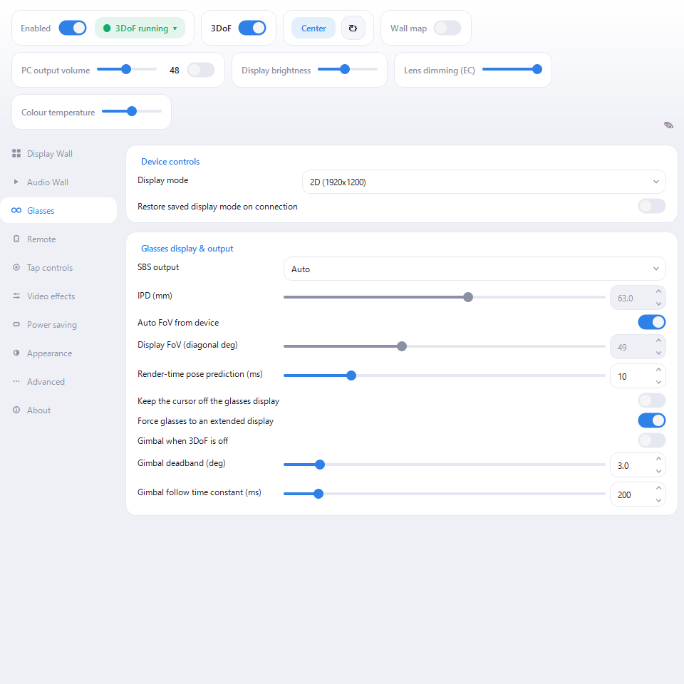
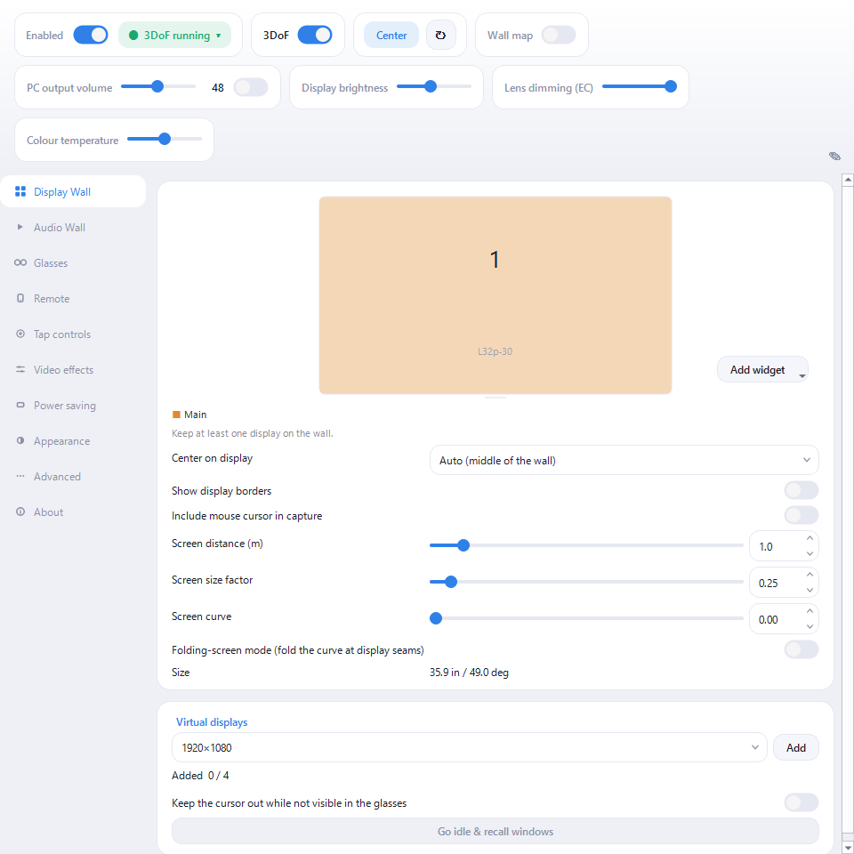
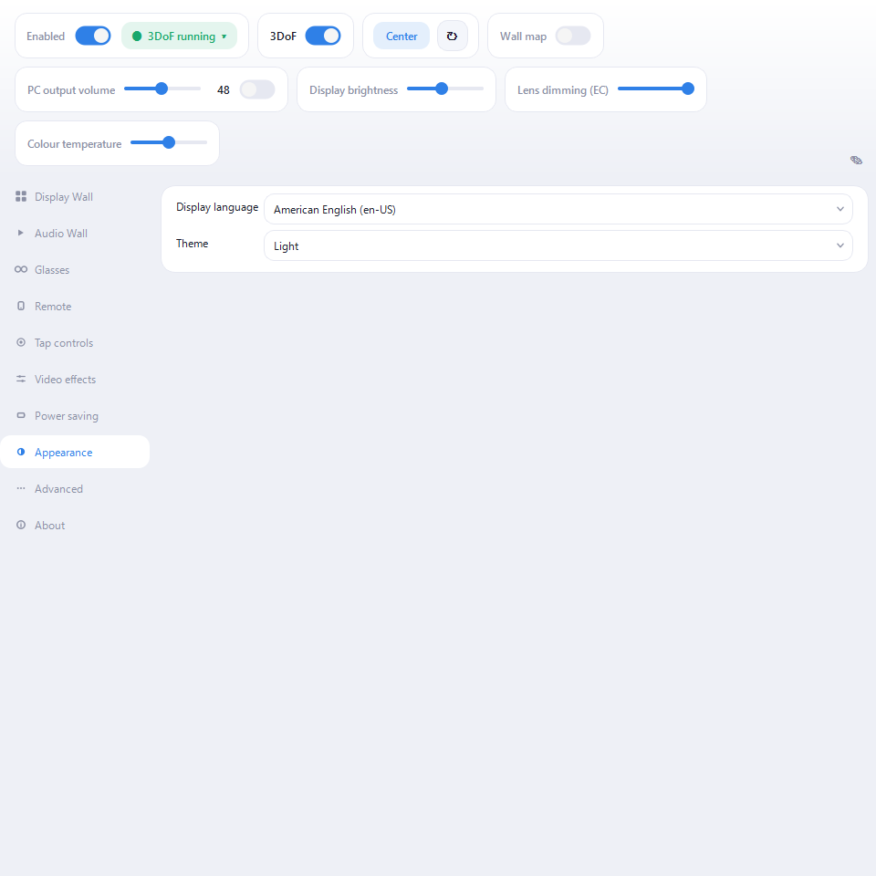

nyan Real / Spatial Wall User Manual
Put on the glasses and multiple displays appear in the space in front of you. As you turn your head, your viewpoint moves while the displays stay in place. This manual covers connection, basic setup, everyday use, and troubleshooting.
Individual settings explain themselves — hover any control in the app for its tooltip. This manual covers what comes before that: what each part is for, and in what order to use it.
The text and screenshots reflect the 0.9.0 development build as of September 10, 2026. Screenshots show the Windows build with XREAL 1S connected and the master switch on. Available settings and controls vary by OS and glasses model.
About this app
Connect a supported pair of glasses over USB and your PC's displays are arranged in space as a wall, redrawn as you move your head. Physical and virtual displays can both join, and sound can come from where each window sits.
There are two halves.
- Display Wall — lays your displays out in space. The guiding idea is that your OS display arrangement becomes the wall: rearrange the screens the way you always do, in the OS, and the layout in space follows. You can also focus a single display, fold the wall like a folding screen, or change its distance.
- Audio Wall — finds the apps that are playing audio and mixes them so each one is heard from the direction of its window. No per-app setup.
It contacts no server on the internet. It makes no automatic update check and sends no usage or crash data. Network communication is limited to these local paths:
- Phone remote and Android glasses bridge — devices on the same LAN
- XREAL One-family device link — direct communication with the glasses over TCP/IP through USB Ethernet
- Tab audio from the Chrome extension — loopback on the same PC (
127.0.0.1) - Local control from Stream Deck and similar tools — loopback on the same PC (
127.0.0.1)
Support is not automated either. To report a problem you copy the details from "About" and paste them into a GitHub Issue by hand.
Supported glasses: XREAL (One Pro / One / 1S / Air 2 Pro / Air 2 / Air), ROG XREAL R1, xbx a01 / a01+, RayNeo Air, Rokid (Max / Air), VITURE (Pro / One / One Lite), EPSON MOVERIO (BT-40 / BT-30C), Nreal Light and MAD Gaze Glow. What each model can do differs — see supported-glasses page for the details.
Where it runs: the same app runs on Windows, Linux and macOS.
| OS | Requirement |
|---|---|
| Windows | 64-bit Windows 10 version 2004 (build 19041) or later |
| Linux (GNOME) | GNOME 46 or later, Wayland session |
| Linux (Raspberry Pi) | Raspberry Pi OS trixie or later with labwc |
| macOS | macOS 14.4 or later (experimental; some features are missing) |
On any of them you also need a USB-C port that carries video (or an HDMI adapter) and the glasses themselves. No internet connection is required. The phone remote and Android glasses bridge require the phone and PC to be on the same LAN. The appendix has a table of what differs per OS.
Installing and first run
Windows
Both the installer (nyan-real-spatial-wall-*-installer.exe) and the portable
ZIP work. The portable build just needs extracting; run spatial-wall.exe and
nothing is installed.
About code signing: the current builds are unsigned, so Windows SmartScreen may warn on first run. Choose "More info" then "Run anyway".
Linux (GNOME)
Install the .deb with apt install. Virtual displays go through GNOME's own
screen-sharing support (Mutter ScreenCast), so there is no driver to add.
After installing or updating, log out and back in to activate the bundled GNOME
Shell integration. While the app warns that this integration is unavailable,
some features are restricted, including focus and using only glasses plus
virtual displays without a normal monitor.
Linux (Raspberry Pi / labwc)
Install the Pi-specific .deb. Virtual displays use labwc's own support, and the
package adds the udev rules that let the app reach the glasses over USB.
macOS
Experimental. Use the current package supplied through your purchase or distribution channel, and check its README for supported architectures and signing status.
From here on, using the app is the same everywhere.
The app shows a resident icon: in the notification area on Windows and Linux, and in the menu bar on macOS. Closing its window does not quit it. Use the icon to reopen the window or choose "Quit" from its menu.
What you see first is the operation panel across the top and the category list down the left.
- Enabled — the master switch. Turning it off stops glasses output, the sensor connection, and Audio Wall. Virtual displays behave as described under display combinations below.
- 3DoF (head tracking) — with it off, the wall normally stays locked to your view. Enable "Gimbal when 3DoF is off" in "Glasses" to follow larger head movements smoothly.
- Center — re-places the wall so the direction you are facing becomes forward.
- Wall map — shows the wall as a small flat map (see below).

You can go through the settings before connecting anything. Once the connected glasses are detected and head tracking starts, the status changes to "3DoF running".
Connecting the glasses
Turn the master switch on and plug in over USB for automatic detection. Click the status indicator at the top (such as "3DoF running") to check the detected model, IMU transport, and glasses display. The Glasses category contains display mode, SBS output, FoV, and related settings.
In the normal display path, the glasses need to be a separate extended display. A clone, or "second screen only", would hide the very monitors the wall is supposed to capture. By default the app makes them an extended display and tucks them into a corner of the desktop — a corner that touches the rest at a single point, so neither the cursor nor a dragged window can bleed onto the glasses. While cloned, the glasses and the mirrored monitor share one desktop source, so wall output stays off until Windows finishes giving the glasses their own extended source. On Windows, Spatial Wall can also reactivate a disabled supported-glasses target.
As a conditional feature, when a display mode's hardware EDID contains the
Microsoft HMD VSDB, Windows classifies the glasses as HeadMounted and removes
them from the desktop. Spatial Wall detects this state automatically, acquires
the display exclusively, and drives it directly. It cannot turn ordinary
glasses into an HMD through a setting. Extended-display layout, corner tucking,
the glasses cursor fence, and Fullscreen Exclusive do not apply while this HMD
path is active. See "Tested configurations and known limitations" in the
appendix for eligibility and tested hardware.
Once connected, check these three.
- Display mode — 2D or 3D SBS, and the refresh rate. On supported models, 72 Hz and 90 Hz modes also lower the OLED duty cycle, reducing motion blur. "Restore saved display mode on connection" is off by default. Manual choices are remembered even while it is off, and the setting also restores normal modes. If the last remembered mode is HMD-capable, enable it only on a PC that enters that mode reliably.
- SBS output — "Auto" gets most modes right. Only half-SBS modes cannot be told apart by resolution, so switch those on by hand.
- Brightness and volume — use the operation panel at the top. Controls such as brightness and the glasses' amplifier volume appear when the model supports them. The amplifier inside the glasses and the PC's volume multiply, so if the PC is already at 100% and it is still quiet, raise the glasses' own volume.
Tap controls (supported models)
Tap the temple twice or three times for play/pause, volume, centering and so on. If the response is unreliable, calibrate from the "Tap controls" category — the prompts appear inside the glasses.
Idle sleep
After a period without motion the app sleeps and blanks the screen; move to wake it. The timeout and sensitivity live under "Power saving".
Building the wall
The Display Wall category decides which displays join the wall and how they are arranged.

Choosing displays
The diagram shows the OS's current display arrangement. Click a tile to toggle whether that display belongs to the wall. Excluded tiles are dimmed, and the last remaining display cannot be removed. A virtual display created by Spatial Wall also cannot be removed from the wall while it is the main display; make another display main first. The glasses' own display never joins the wall.
Arranging them
Spatial Wall has no layout-mode selector: the OS display arrangement is the wall. Drag a tile in the diagram to edit that arrangement. Apply writes the new positions to the OS; Cancel discards the edit. Changes made in the OS's display settings are reflected in the wall as well.
Turn on "Show display borders" to add a thin black separator between adjacent displays. There are no numeric controls for display gaps or outer padding.
Setting your viewpoint
- Center — makes the direction you are facing forward. Nominate a display and that display is what ends up in front of you.
- Focus — shows a single display from the wall, for when you want to sink into one task. Pick a display number at the top; "All" returns to the whole wall. This panel is hidden when fewer than two focus targets are available.
- Screen distance — how far the wall sits. Physical size is preserved, so closer looks bigger. Below 0.5 m tires the eyes, so treat that as a brief effect rather than a working distance.
- Screen size factor — adjusts the wall's physical size independently of its distance.
- Screen curve / Folding-screen mode — curves the wall towards you. In folding-screen mode the curve is taken at the seams between displays instead of as a smooth arc, so no single display is ever bent through its middle.
Widgets
Use "Add widget" to pin a small panel such as a clock to an edge of the wall. Click its tile to show or hide it, drag to move it, drag its lower-right corner to resize it, and right-click to open its settings.
Virtual displays
Short on physical monitors? Add virtual displays and the wall grows. Choose a resolution under "Virtual displays" at the bottom of "Display Wall", then click "Add". You can also right-click empty space in the diagram to add one. Right-click a virtual-display tile to change its resolution or remove it.
On Windows this needs a driver — nyan Real / Virtual Display Driver (recommended) or ParsecVDisplay. Drivers are not bundled, so install one separately. Linux and macOS use the OS's own support and need nothing installed.
Virtual displays you add exist only while this app runs. Their previous configuration is restored the next time you start it.
Adding or removing a virtual display changes only that one display. Removing one of several leaves the others running, and adding one after removing all of them resumes operation automatically. These changes do not put the whole set into idle mode.
What each display combination does
In the table below, G is a recognised glasses display, V is a virtual
display created by Spatial Wall, and N is any other normal display. Multiple
N or V displays follow the same rules.
| Connected displays | While the master is on | Main display | When the master is off or G disconnects |
|---|---|---|---|
| G only | There is no N or V to put on the wall, so wall output stays idle | G (not applicable on Pi) | No change |
| G + N | N is shown on the wall through G | N | Only the wall on G stops; N remains usable |
| G + V | Spatial Wall first proves that V is really visible through G | V becomes main automatically on Windows, GNOME, and macOS. Pi has no global main-display concept | With no N to escape to, V automatically goes idle for safety. Turning the master on restores it |
| G + N + V | N and V are shown on the same wall | Normally N. On Windows, GNOME, and macOS, right-click N or V in the Display Wall diagram to choose it | Windows, GNOME, and macOS return to N and keep V connected. Windows and macOS restore an explicit choice after the master is turned on again; on GNOME, choose it again. Pi makes V idle |
V is made main automatically only when there is exactly one G, at least one V, and no N, and a current V frame has actually been shown through G. It is not automatic when an N is present or multiple glasses displays are detected. Windows Direct HMD output puts G outside the desktop and therefore follows the HMD-output path instead of this table.
To choose V with "Make main display", the display must belong to the wall and be viewable through the glasses. It cannot be selected while the glasses are asleep or a single target is focused. On GNOME, the V choice lasts for the current app session; choose it again after master-off, glasses disconnection, or restarting the app. Idle sleep preserves the choice across wake. The Pi build has no OS-level main-display concept.
Going idle and resuming
Virtual displays are only visible through the glasses, so any window left on one goes missing when you take the glasses off. Go idle & recall windows disconnects the virtual displays temporarily, and the OS moves their visible windows to the remaining displays. Resume & restore windows restores the previous virtual-display configuration and the recalled windows. Going idle is unavailable while the wall is being shown, so turn the master off first. Resume also works without the glasses. Turning the master on with the glasses present resumes automatically.
Normally, if an N remains available, merely turning the master off or disconnecting the glasses does not make V idle. The invisible displays remain reachable through the wall map. The exceptions are topologies with no safe escape, such as G + V, and the Pi build. The app may also make V idle while the computer sleeps to protect the display layout, then resume it after the physical displays have settled following wake.
The wall map
A small window showing the whole wall as a flat map. The virtual displays remain mouse-operable there, so you can keep working with the glasses off. Wheel to zoom, drag to pan, double-click to fit.
On Windows, Raspberry Pi, and macOS, the wall map needs a normal display to host its window. G cannot host it while showing the wall, so the switch is disabled without an N, for example in G + V or G + V + V. With the master off, G may be available again as a desktop display. On GNOME, active Shell integration allows the map to be hosted on a virtual display, so it can also be used without N.
Closing the wall map closes only that window; it does not disconnect any virtual display. Use Go idle & recall windows / Resume & restore windows to disconnect and restore them.
Keeping the cursor out of trouble
On Windows and macOS, the glasses display and the virtual displays each have a "keep the cursor off" option. With it on, the cursor tunnels through to the display on the far side instead of getting stranded. The virtual-display option, "Keep the cursor out while not visible in the glasses", applies while a display is invisible, such as during sleep or with the glasses disconnected. When focusing one display, that visible virtual display remains mouse-operable; the other invisible virtual displays stay fenced. This also applies over the Android bridge. The glasses option is hidden while the glasses are an HMD outside the desktop, where no cursor can enter them. macOS asks for Input Monitoring permission the first time. GNOME and Raspberry Pi use different input controls, so this option is not shown there.
Tip: if the cursor occasionally jumps to the far edge of the adjacent display, turn off Windows Settings > System > Display > Multiple displays > "Make it easier to move the cursor between displays". It interferes with the fence.
Sound
Output
The "Audio output" selector in "Audio Wall" chooses the device that plays Spatial Wall's audio. "Auto: glasses" switches to the glasses' USB audio once per connection. Pick a specific device and the choice is remembered while that device is away, then re-applied when it returns.
Volume and mute are in the operation panel at the top. While the Android bridge is the active output, these controls adjust the phone's media volume instead.
Audio Wall
Turn on spatial audio in the "Audio Wall" category and the app
finds whatever is playing, then mixes each app so it is heard from the direction
of its window. There is no per-app setup. To keep something out of the mix, add
its executable name to the exclusion list (for example discord.exe).
Direction is per app. An app spread across several screens collapses to a single direction.
Browser tabs
On Chrome or Edge 116 or later, install the "nyan Real Audio Wall connector" extension to place each tab's audio individually. It works on Windows, Linux and macOS. DRM media and cross-origin media without CORS permission keep playing normally in the browser and are not spatialized. Audio generated directly with Web Audio may not be captured either.
Controlling it
Shortcut keys ("Remote" > "Shortcut keys")
Centering, focus (next / previous / off), toggling 3DoF and the master switch can be bound to global hotkeys on Windows, Raspberry Pi (labwc) and macOS. They keep working while another app has the foreground. On macOS, the default master shortcut is Control+Shift+Esc. The GNOME build does not yet register global shortcuts, so these rows are not shown there.
Phone remote ("Remote")
Turns a phone on the same network into a touchpad remote — a PC on wired Ethernet and a phone on Wi-Fi still reach each other, as long as it is the same network. Scan the QR code with the phone's camera — no app to install. The page offers mouse control, text input, centering, gyro bias recalibration, focus, and volume. Use the keyboard button to compose text on the phone and send it to the PC's input field. In the remote's settings, "Display Wall" groups the layout diagram, center display, screen distance, size factor, and curve.
When the QR cannot be scanned (say the glasses are your only display), use Pair with code: open the URL in the phone's browser and type the 6-digit code shown in the app.
If Windows Firewall asks on first enable, choose "Allow access". Only devices on your own network can reach it, and any device that does not know the token in the URL is rejected.
The phone remote, Android app download, and glasses bridge use unencrypted HTTP/WebSocket on the LAN. Use them only on a trusted private network, not shared or public Wi-Fi.
Android glasses bridge ("Remote")
A way to connect the glasses to an Android phone instead of the PC. The app on the phone handles the USB connection and relays video and head orientation to the wall on your PC. This is useful when you would rather not tie up a PC port or want to sit away from the machine. Windows and macOS can send video and audio by treating the glasses as an Android external display (Presentation). On macOS this uses Screen Recording and Audio Recording permission. The appendix lists the tested configuration and known limitations. High quality mode and the external Video Input widget remain Windows-only. On Windows, "High quality mode" is under "Remote" > "Android glasses bridge". It sharpens text and fine details, at the cost of more network traffic when large parts of the screen change.
Once the phone app connects, "Remote" shows its state: the glasses' brightness, display mode and external display, plus whether the IMU and video channels are up. Model-specific settings behave the same over the bridge as they do when the glasses are plugged straight into the PC.
Stream Deck ("Remote" > "Stream Deck")
Turning on "Accept control from this PC" opens a loopback-only (127.0.0.1) control port, so the Stream Deck plugin can trigger the same actions as the global hotkeys. It is unreachable from other machines, so there is no token.
Start at login ("Advanced")
Windows, packaged Linux builds and the macOS app bundle can start with the desktop session. macOS may open System Settings > General > Login Items for approval. The control window's previous visible or hidden state is remembered. Close the window beforehand if you want only the resident icon at login; the icon can reopen it at any time.
Tuning the picture and the load
Smoothness ("Power saving")
- Wall capture rate — the capture ceiling. "Auto" is fine; drop to 45 Hz or Eco (30 Hz) to lighten the load.
- Frame skip — skips rendering while nothing moves, to save power. With headroom to spare, turning it off makes motion resume more smoothly.
Picture ("Video effects")
- Banding reduction (deband) — cuts the banding visible in dark gradients.
- Edge smoothing — settles the shimmer on text and thin lines.
Blur and flicker (Glasses)
- Low-persistence duty — lowers the OLED duty cycle while your head is moving, cutting motion blur at the cost of brightness. XREAL Air and Nreal Light only.
- Glasses Fullscreen Exclusive (Windows, "Advanced") — normally unnecessary. Try it only where scanout falls below the panel's nominal Hz (some NVIDIA hybrid setups). It belongs to the desktop path and is disabled while DisplayCore drives an HMD.
Appearance ("Appearance")
Display language defaults to "Auto (follow OS)". You can explicitly choose English or Japanese. After changing it, restart Spatial Wall when prompted to apply the new language.
The theme defaults to "Auto (follow OS)"; Light and Dark can be forced. With Ubuntu 24.04's stock Qt 6.4, Auto uses the light theme and does not follow live OS theme changes, while Light and Dark remain available manually.

When something is wrong
The glasses are not detected
- Check that the USB cable carries both video and data. Charge-only cables cannot work.
- On XREAL One-family models, USB Ethernet / TCP/IP must be enabled on the glasses. 3DoF will not work without it (the app says so inside the glasses).
- In DP audio mode the app cannot acquire sensor data. Switch the glasses to USB audio.
Nothing shows in the glasses, or the desktop vanished
- In the normal desktop path, check that the display mode is not "Duplicate" or "Second screen only". Leaving "Force glasses to an extended display" on fixes this on every connection on Windows by identifying the supported glasses' physical target and repairing its disabled or cloned-source state.
- If the display stays dark after switching into an HMD-capable mode, turn off "Restore saved display mode on connection" and reconnect the cable. If the normal display still does not return, restart Windows. Do not force-quit the app while it is waiting to verify the return to the normal display path.
- See "Tested configurations and known limitations" in the appendix for the GPU-specific status of direct HMD output.
Stutter or dropped frames
- Lower "Wall capture rate".
- Turning frame skip off can smooth out the moment motion resumes.
- Only in the normal desktop path, if you suspect scanout has dropped to 60 Hz, try Fullscreen Exclusive.
No sound, or sound from the wrong direction
- Check that "Audio output" is pointed at the glasses.
- Audio Wall works per app; move a window to another display and its direction changes with it.
- When using Audio Wall, set the Windows default output to a device you do not use for listening. If both the default output and Spatial Wall output are audible, you will hear the sound twice.
The cursor gets lost
On Windows and macOS, turn on the "keep the cursor off" options. macOS asks for Input Monitoring permission the first time. On GNOME, Raspberry Pi, or when the cursor has already moved to an invisible display, use the wall map to control it.
On macOS, Control + Shift + Esc turns the master switch off and removes
Spatial Wall from the glasses. If a virtual display managed by Spatial Wall is
the main display, the app first moves the main-display role to a visible physical
display.
Still stuck
"About" > "Copy support information" puts the product, version, OS, the GPU actually used and its driver version when available, connected glasses and runtime state, display layout, virtual-display backend and status, and support-approved effective settings on the clipboard. With nyan Real / Virtual Display Driver, it also includes the driver and app protocol versions. Connection tokens, output paths, display and audio-device identifiers, and other potentially private or secret settings are excluded. Paste it into "Copied support information" in the support form without editing it. Select the OS, enter the supported glasses model, then fill in "What happened" and "Steps to reproduce" separately. Before attaching logs or screenshots, check that they contain no private or secret information.
Appendix
What differs per OS
✅ Supported · 🟡 Conditional · — Unsupported
| Feature | Windows | GNOME | Raspberry Pi | macOS |
|---|---|---|---|---|
| Display Wall / Audio Wall | ✅ | ✅ | ✅ | ✅ |
| Virtual displays | ✅ separate driver required | ✅ built into the OS | ✅ built into the OS | ✅ built into the OS |
| Wall map | ✅ requires N while warping | ✅ can also use V with active Shell integration | ✅ requires N while warping | ✅ requires N while warping; also available with the master off or glasses disconnected |
| Cursor fence | ✅ | — | — | ✅ requires Input Monitoring permission |
| Tap controls | ✅ | ✅ | ✅ | ✅ requires Accessibility permission |
| Phone remote | ✅ | ✅ | ✅ | ✅ requires Accessibility permission |
| Global hotkeys | ✅ | — | ✅ | ✅ |
| Android glasses bridge output | ✅ | — | — | 🟡 video, 3DoF, and audio verified on Intel Mac; Apple Silicon unverified |
| Flat-wall screenshot | ✅ | ✅ | ✅ | — the Capture button is visible but does not save a file yet |
macOS as a whole is experimental. Most host-specific unavailable features are hidden from the UI; the flat-wall Capture button is the current exception.
GNOME Android glasses output is not yet available in standard distributed builds. A development build has verified single-desktop video and audio, but does not yet support multi-display walls or widget video.
Tested configurations and known limitations
The following results cover the Spatial Wall 0.9.0 series through September 10, 2026.
| Path | Tested configuration | Known limitations |
|---|---|---|
| Windows direct HMD output | Windows 11 Pro (build 26200) / RTX 3060 / xbx a01+ with an HMD VSDB. Acquisition and scanout verified at 2D 90 Hz and 3D SBS 72 Hz. | Only display modes with a Microsoft HMD VSDB are eligible. A Radeon 780M system (driver 32.0.31035.1003) did not expose an HMD Target. Intel UHD (driver 32.0.101.7088) was not stable in its classification; acquisition and scanout remain unverified. |
| macOS Android glasses bridge | Intel Mac / macOS 15.7 / SC-52D / XREAL Air. Video from one physical and two virtual displays, 3DoF, audio, and automatic reconnection after restarting Spatial Wall were verified. | Apple Silicon is unverified. High quality mode and external Video Input are Windows-only. |
| Windows Android glasses bridge | Surface Duo / Android 12 / xbx a01+. Remote control, 1080p video, and reconnection verified. | A 4K display can remain black. Use focus on a 1080p display with this configuration. Head-tracking feel while wearing the glasses, audible playback, and long sessions remain unverified. |
Where settings live
Settings and logs are under %APPDATA%\nyan-real\ (the platform's user config
directory on Linux and macOS). You can open the log-storage folder from the app.
Resetting
"Advanced" > "Reset settings to defaults" returns everything to its initial state. This cannot be undone.
Checking the version
"About" shows the version and build time. Right-clicking spatial-wall.exe and
opening Properties > Details shows it too.
Licenses
"About" > "View the license agreement" opens the terms this app is licensed
under — the same text the installer shows before it copies anything. It also
sits next to the app as EULA.ja.txt / EULA.en.txt; the Japanese text is the
authoritative one.
"About" > "View third-party licenses" lists what is bundled and under which
license. Where a component requires its full license text to travel with the
app, that text is in licenses/ next to the app.